Set Functions¶
- class improb.setfunction.SetFunction(pspace, data=None, number_type=None)¶
A real-valued set function defined on the power set of a possibility space.
Bases: collections.MutableMapping, cdd.NumberTypeable
- __init__(pspace, data=None, number_type=None)¶
Construct a set function on the power set of the given possibility space.
Parameters: - pspace (list or similar; see Possibility Spaces) – The possibility space.
- data (dict) – A mapping that defines the value on each event (missing values default to zero).
- __repr__()¶
>>> SetFunction(pspace=3, data={(): 1, (0, 2): 2.1, (0, 1, 2): '1/3'}) SetFunction(pspace=PSpace(3), data={(): 1.0, (0, 2): 2.1, (0, 1, 2): 0.333...}, number_type='float') >>> SetFunction(pspace=3, data={(): '1.0', (0, 2): '2.1', (0, 1, 2): '1/3'}) SetFunction(pspace=PSpace(3), data={(): 1, (0, 2): '21/10', (0, 1, 2): '1/3'}, number_type='fraction')
- __str__()¶
>>> print(SetFunction(pspace='abc', data={'': '1', 'ac': '2', 'abc': '3.1'})) : 1 a c : 2 a b c : 31/10
- get_bba_choquet(gamble)¶
Calculate the Choquet integral of the set function as a basic belief assignment.
Parameters: gamble – dict or similar; see Gambles The Choquet integral of a set function
 is given by
the formula:
is given by
the formula: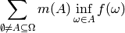
where
 is the Mobius transform of .
is the Mobius transform of .Warning
In general, improb.setfunction.SetFunction.get_choquet() is far more efficient.
See also
- improb.lowprev.lowprob.LowProb.is_completely_monotone()
- To check for complete monotonicity.
- improb.setfunction.SetFunction.get_mobius()
- Mobius transform of an arbitrary set function.
- get_choquet(gamble)¶
Calculate the Choquet integral of the given gamble.
Parameters: gamble – dict or similar; see Gambles The Choquet integral of a set function
is given by
the formula: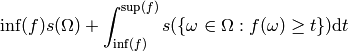
for any gamble
 (note that it is usually assumed that
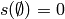). For the discrete case dealt with here,
this becomes
(note that it is usually assumed that
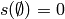). For the discrete case dealt with here,
this becomes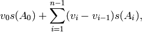
where
 are the
unique values of sorted in increasing order
and 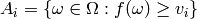 are the
level sets induced.
are the
unique values of sorted in increasing order
and 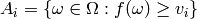 are the
level sets induced.>>> s = SetFunction(pspace='abc', data={'': 0, ... 'a': 0, 'b': 0, 'c': 0, ... 'ab': .5, 'bc': .5, 'ca': .5, ... 'abc': 1}) >>> s.get_choquet([1, 2, 3]) 1.5 >>> s.get_choquet([1, 2, 2]) 1.5 >>> s.get_choquet([1, 2, 1]) 1.0
Warning
The set function must be defined for all level sets
 induced by the argument gamble.
induced by the argument gamble.>>> s = SetFunction(pspace='abc', data={'ab': .5, 'bc': .5, 'ca': .5, ... 'abc': 1}) >>> s.get_choquet([1, 2, 2]) 1.5 >>> s.get_choquet([2, 2, 1]) 1.5 >>> s.get_choquet([-1, -1, -2]) -1.5 >>> s.get_choquet([1, 2, 3]) Traceback (most recent call last): ... KeyError: Event(pspace=PSpace(['a', 'b', 'c']), elements=set(['c']))
- classmethod get_constraints_bba_n_monotone(pspace, monotonicity=None)¶
Yields constraints for basic belief assignments with given monotonicity.
Parameters: - pspace (list or similar; see Possibility Spaces) – The possibility space.
- monotonicity (int or collections.Iterable of int) – Requested level of monotonicity (see notes below for details).
This follows the algorithm described in Proposition 2 (for 1-monotonicity) and Proposition 4 (for n-monotonicity) of Chateauneuf and Jaffray, 1989. Some characterizations of lower probabilities and other monotone capacities through the use of Mobius inversion. Mathematical Social Sciences 17(3), pages 263-283:
A set function
defined on the power set of
 is
is  -monotone if and only if its Mobius
transform satisfies:
-monotone if and only if its Mobius
transform satisfies: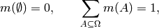
and

for all
 , with
, with
 .
.This implementation iterates over all
 , with
, with  , and yields each
constraint as an iterable of the events 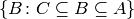. For example, you can then check
the constraint by summing over this iterable.
, and yields each
constraint as an iterable of the events 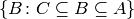. For example, you can then check
the constraint by summing over this iterable.Note
As just mentioned, this method returns the constraints corresponding to the latter equation for
 equal to monotonicity. To get all the
constraints for n-monotonicity, call this method with
monotonicity=xrange(1, n + 1).
equal to monotonicity. To get all the
constraints for n-monotonicity, call this method with
monotonicity=xrange(1, n + 1).The rationale for this approach is that, in case you already know that (n-1)-monotonicity is satisfied, then you only need the constraints for monotonicity=n to check for n-monotonicity.
Note
The trivial constraints that the empty set must have mass zero, and that the masses must sum to one, are not included: so for monotonicity=0 this method returns an empty iterator.
>>> pspace = "abc" >>> for mono in xrange(1, len(pspace) + 1): ... print("{0} monotonicity:".format(mono)) ... print(" ".join("{0:<{1}}".format("".join(i for i in event), len(pspace)) ... for event in PSpace(pspace).subsets())) ... constraints = SetFunction.get_constraints_bba_n_monotone(pspace, mono) ... constraints = [set(constraint) for constraint in constraints] ... constraints = [[1 if event in constraint else 0 ... for event in PSpace(pspace).subsets()] ... for constraint in constraints] ... for constraint in sorted(constraints): ... print(" ".join("{0:<{1}}" ... .format(value, len(pspace)) ... for value in constraint)) 1 monotonicity: a b c ab ac bc abc 0 0 0 1 0 0 0 0 0 0 0 1 0 0 1 0 0 0 0 1 0 1 0 0 0 0 0 1 0 1 1 1 0 0 1 0 0 0 0 0 0 0 1 0 0 0 1 0 0 0 1 0 1 0 0 0 0 0 1 0 1 0 1 1 0 1 0 0 0 0 0 0 0 1 0 0 0 1 0 0 0 1 0 0 1 0 0 0 0 1 0 0 1 1 0 1 2 monotonicity: a b c ab ac bc abc 0 0 0 0 0 0 1 0 0 0 0 0 0 0 1 1 0 0 0 0 0 1 0 0 0 0 0 0 0 1 0 1 0 0 0 0 1 0 0 0 0 0 0 0 1 0 0 1 3 monotonicity: a b c ab ac bc abc 0 0 0 0 0 0 0 1
- get_mobius(event)¶
Calculate the value of the Mobius transform of the given event. The Mobius transform of a set function
is
given by the formula: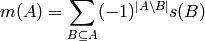
for any event
 .
.Warning
The set function must be defined for all subsets of the given event.
>>> setfunc = SetFunction(pspace='ab', data={'': 0, 'a': 0.25, 'b': 0.3, 'ab': 1}) >>> print(setfunc) : 0.0 a : 0.25 b : 0.3 a b : 1.0 >>> inv = SetFunction(pspace='ab', ... data=dict((event, setfunc.get_mobius(event)) ... for event in setfunc.pspace.subsets())) >>> print(inv) : 0.0 a : 0.25 b : 0.3 a b : 0.45
- get_zeta(event)¶
Calculate the value of the zeta transform (inverse Mobius transform) of the given event. The zeta transform of a set function
is given by the formula: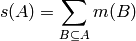
for any event
(note that it is usually assumed that
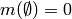).Warning
The set function must be defined for all subsets of the given event.
>>> setfunc = SetFunction( ... pspace='ab', ... data={'': 0, 'a': 0.25, 'b': 0.3, 'ab': 0.45}) >>> print(setfunc) : 0.0 a : 0.25 b : 0.3 a b : 0.45 >>> inv = SetFunction(pspace='ab', ... data=dict((event, setfunc.get_zeta(event)) ... for event in setfunc.pspace.subsets())) >>> print(inv) : 0.0 a : 0.25 b : 0.3 a b : 1.0
- is_bba_n_monotone(monotonicity=None)¶
Is the set function, as basic belief assignment, n-monotone, given that it is (n-1)-monotone?
Note
To check for n-monotonicity, call this method with monotonicity=xrange(n + 1).
Note
For convenience, 0-montonicity is defined as empty set and possibility space having lower probability 0 and 1 respectively.
Warning
The set function must be defined for all events.
- classmethod make_extreme_bba_n_monotone(pspace, monotonicity=None)¶
Yield extreme basic belief assignments with given monotonicity.
Warning
Currently this doesn’t work very well except for the cases below.
>>> bbas = list(SetFunction.make_extreme_bba_n_monotone('abc', monotonicity=2)) >>> len(bbas) 8 >>> all(bba.is_bba_n_monotone(2) for bba in bbas) True >>> all(bba.is_bba_n_monotone(3) for bba in bbas) False >>> bbas = list(SetFunction.make_extreme_bba_n_monotone('abc', monotonicity=3)) >>> len(bbas) 7 >>> all(bba.is_bba_n_monotone(2) for bba in bbas) True >>> all(bba.is_bba_n_monotone(3) for bba in bbas) True >>> bbas = list(SetFunction.make_extreme_bba_n_monotone('abcd', monotonicity=2)) >>> len(bbas) 41 >>> all(bba.is_bba_n_monotone(2) for bba in bbas) True >>> all(bba.is_bba_n_monotone(3) for bba in bbas) False >>> all(bba.is_bba_n_monotone(4) for bba in bbas) False >>> bbas = list(SetFunction.make_extreme_bba_n_monotone('abcd', monotonicity=3)) >>> len(bbas) 16 >>> all(bba.is_bba_n_monotone(2) for bba in bbas) True >>> all(bba.is_bba_n_monotone(3) for bba in bbas) True >>> all(bba.is_bba_n_monotone(4) for bba in bbas) False >>> bbas = list(SetFunction.make_extreme_bba_n_monotone('abcd', monotonicity=4)) >>> len(bbas) 15 >>> all(bba.is_bba_n_monotone(2) for bba in bbas) True >>> all(bba.is_bba_n_monotone(3) for bba in bbas) True >>> all(bba.is_bba_n_monotone(4) for bba in bbas) True >>> # cddlib hangs on larger possibility spaces >>> #bbas = list(SetFunction.make_extreme_bba_n_monotone('abcde', monotonicity=2))